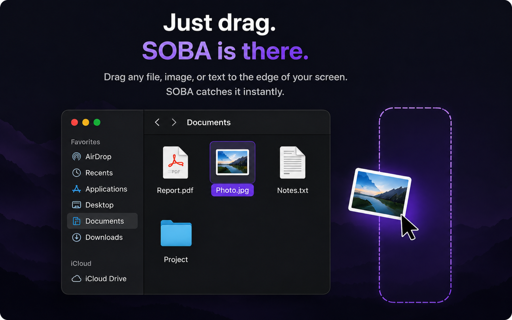

Drop
Temporarily hold files, folders, images, URLs, or text while you move somewhere else.
 SOBAYour Mac Sidekick
SOBAYour Mac Sidekick
SOBA gives you one effortless place to hold something, bring it back later, keep it visible, share it, or act on it — without breaking your flow.
SOBA lives close to what you are already doing instead of asking you to manage yet another productivity system.
Temporarily hold files, folders, images, URLs, or text while you move somewhere else.
Bring an item or thought back tonight, tomorrow, this weekend, or whenever you need it.
Keep a screenshot, reference, note, or image floating above your work without switching windows.
Send files, URLs, and text to trusted devices quickly, with a local-first workflow.
SOBA understands what you give it and shows useful actions — clean a URL, format JSON, resize an image, copy a path, open a terminal, and more.
Type, paste, or drop anything. SOBA detects the context and surfaces the actions that make sense right now.
Call insurance tomorrow
Later → Tomorrow
https://example.com/?utm_source=…
Open · Clean · Pin · Share
{"name":"Soba","active":true}
Format · Validate · Share
Paste JSON into SOBA and instantly format, validate, copy, or share it without opening another tool.
Drop or paste an image into SOBA to pin it, save it for later, share it, preview it, resize it, or convert it.
SOBA keeps common PDF actions close so you can preview, compress, pin, postpone, or share a document in seconds.
SOBA recognizes address-like text and gives you the useful next steps immediately—open Maps, keep plain text, pin it, share it, or bring it back later.
SOBA recognizes timestamp-like values and instantly shows UTC, local, and relative time—useful when reading logs, API responses, database values, or debugging output.
SOBA recognizes command-like text so you can pin it, share it, copy it as plain text, or optionally send it to Terminal when that capability is enabled.
SOBA detects what you give it and changes the Actions menu automatically. Images, PDFs, and folders each get tools that make sense for that item.
Preview, convert, resize, compress, remove metadata, OCR text, save, copy paths, or reveal the image in Finder.
Compress, preview, split, extract pages, copy the path, or reveal the document in Finder.
Open Terminal here, launch IntelliJ or VS Code, open Finder, preview the folder, copy paths, or compress it.
Configure SOBA to appear from the right, left, top, or bottom edge. Drag a file toward that edge and SOBA appears. From there you can Drop it, send it to Later, Pin it, Share it, or run actions tailored to that file type.

SOBA now adds the small platform details that make a utility feel native: full keyboard control, guided onboarding, Undo, optional iCloud sync, Focus awareness, and fuzzy search across your shelf.
Use arrow keys to move through the shelf, Quick Capture, and Actions. Press Enter to open the selected item or fire its default action.
A short guided tour introduces Drop, Later, Pin, Share, Quick Capture, screen-edge activation, and contextual Actions without overwhelming first-time users.
Clear the shelf, remove a pin, or dismiss a Later item with confidence. SOBA gives you a temporary Undo action for reversible cleanup.
Sync preferences and pins through your own iCloud account. It is optional, Apple-managed, and keeps SOBA’s local-first model intact.
During an active Focus session, SOBA can suppress resurfacing cards and click sounds so your workflow stays quiet.
Search across shelf items with partial words and imperfect matches, so a larger shelf stays fast to navigate.
arch rev
Architecture Review Skill
Finder manages files. Reminders manages tasks. Browsers manage tabs. SOBA owns the few seconds between having something and doing something with it.
Paste a link or text into SOBA and create a QR code in one step. Scan it with any phone's Camera app — no SOBA account, pairing, or app install required on the other device.
SOBA is designed around local workflows. Your files, clipboard items, screenshots, and quick-capture content do not need to become somebody else's cloud data just to be useful.
Download the notarized SOBA installer and drag SOBA into your Applications folder.
Everything you need to start using SOBA in a few seconds.
Press ⌥ S from anywhere on your Mac to open Quick Capture. You can type, paste, or drop something and SOBA will show the most useful actions.
You can work with files, folders, URLs, text, screenshots, images, clipboard content, JSON, paths, and other everyday content.
Drop is a temporary shelf. Put something there while you move to another Finder folder, app, Space, or screen, then drag it back out when you need it.
Later brings something back when you are ready for it. Choose tonight, tomorrow, this weekend, next week, or another time without turning it into a complicated task.
Pin keeps a screenshot, image, note, or reference visible above your work so you do not have to keep switching windows.
Share lets you quickly send files, URLs, or text to a trusted device. SOBA is designed to favor direct, local-first sharing where possible.
Actions change depending on what you give SOBA. A URL can offer Open or Clean URL, JSON can offer Format or Validate, an image can offer Resize or Convert, and a project folder can offer Terminal or IDE actions.
No. SOBA is designed to work locally on your Mac without requiring an account for its core experience.